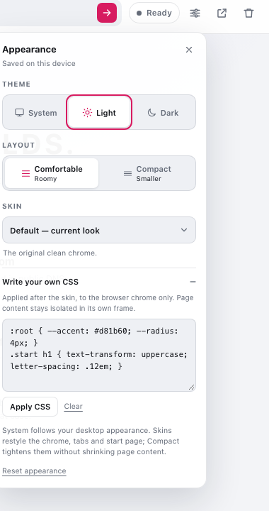

Free Domain Name registry × public DNS
One address bar.
Two name systems.
A small, open-source browser that checks the community Free Domain Name registry before the public internet — and asks you which one you meant when a name exists in both.
- 2name systems checked
- 7built-in skins
- 0accounts required

Registry firstCommunity names resolve without ICANN.
Conflict awareTwo answers? You choose, not the browser.
Any unclaimed nameClaim a name with a prefilled JSON PR.
GPLv3Small, readable and open source.
Download
Desktop builds, straight from CI.
GitHub Actions builds macOS, Windows and Linux packages from the same tagged commit. Pick a platform, or open the latest release to see every asset.
Latest release GitHub Releases
These builds are not notarized. macOS may ask you to allow the app under System Settings → Privacy & Security; Windows SmartScreen may ask for confirmation. Android is currently built from source.
Why it exists
DNS was never the whole story.
The Free Domain Name registry is a community answer to an old question: who gets to hand out names? This browser treats it as a first-class name system instead of a URL shortener bolted onto the side.
Registry before DNS
Type a name and the browser reads the Free Registry first. A record resolves
through the local fdn:// proxy, not through a public registrar.
Conflicts, not guesses
If the registry has the name and public DNS answers, the browser stops and shows both destinations. Choose once and the answer is remembered for the session.
No account, no sync
Tabs live in memory. Theme, density, skin and your CSS stay in local storage on this device. There is no sign-in, profile or cloud dashboard to manage.
Names beyond .fdn
The registry accepts any hostname. A name with no registry record and no public DNS delegation gets a claim page with the exact shard path and an IP-first JSON template. Open the pull request, merge, then re-check.
The resolution path
Registry first. Public DNS second. You decide the tie.
Every address-bar navigation becomes a plan in Rust. The chrome never performs DNS or GitHub requests itself; it renders the plan and reports which source won.
-
01
Parse the input
A bare name, a URL, a port or a path is normalized. Unsafe schemes such as
javascript:are rejected before anything leaves the app. -
02
Ask the registry
The sharded record is looked up in memory, then on disk, then from the raw GitHub CDN. Misses are cached briefly too.
-
03
Check public DNS
NS records show whether a public name is delegated. They reveal an honest conflict when a registry record exists, and a definitive NXDOMAIN is what makes a missing public name claimable.
-
04
Render the plan
Open the registry destination through the proxy, load the public URL directly, show the conflict chooser, or offer the claim page for an available name.
What you can see
The status pill and the modal tell the same story.
Registry
Found in the registry
Opens through fdn://. No public DNS answer, no ambiguity.
Public
Public name, no registry record
Loads the ordinary https:// destination when public DNS is delegated. Unregistered names go to the claim page instead.
Conflict
Both sides answer
A chooser shows both destinations. The choice lasts for the session.
Available
Unregistered
A missing .fdn name, or any other name with a public NXDOMAIN. The claim page has the exact path and a prefilled JSON template.
Only genuinely unregistered names are offered for claim. That means
every missing .fdn name, plus other names that return a definitive public
NXDOMAIN. Registered public names and inconclusive DNS answers still go to the public web.
Quick start
From zero to a resolved name.
Download a prebuilt desktop package, or build from source in a few minutes. The same commands also produce an Android APK.
-
1
Get the app
Use the desktop download for a prebuilt package, or clone the repo, install dependencies and run
npm run dev. The build section has the exact commands and platform requirements. -
2
Type a name
Try
hello.fdn, a normal domain, or a made-up name that does not resolve. The address bar accepts a host, port and path; press Enter. -
3
Read the status pill
Registry, Public, Conflict and Available are different outcomes, not decorations.
-
4
Choose a conflict or claim a name
When both systems answer, pick a destination once. When a name is missing from the registry and public DNS, follow the claim page to the registry pull request, or use its Copy JSON button if GitHub flattens the prefilled file. Then use the re-check button.
A public site that sends X-Frame-Options may refuse to render inside
the content view. Use the external-open button in the toolbar for those sites.
Appearance
Seven looks. One browser.
Default, High-Tech, Futuristic, Historic, Victorian, Amazon and Terminal. Pick one from the Skin dropdown in Appearance; every skin has a light and dark palette. The sixth is Terminal, for anyone who missed Winamp.
Preview
Default
The original clean chrome. Neutral surfaces, violet accent.
High-Tech
Graphite panels, cyan instruments, squared-off HUD.
Futuristic
Violet glass, neon edges, a soft nebula start page.
Historic
Parchment, sepia ink and an old-style serif.
Victorian
Dusty rose, oxblood rules, gold botanical ornament.
Amazon
Rainforest greens, clay and river-blue accents.
Terminal
CRT phosphor, monospace type and subtle scanlines.
No build step
Write your own
The Appearance panel has a 24,000-character CSS editor. Restyle the chrome, tabs, start page and settings panel — then press Apply.
Read the CSS guideScreenshots are the real UI at 1200×800. Use the preview switch above to change theme; every skin ships with both palettes.
Make it yours
A skin editor, not a config file.
Appearance → Write your own CSS. Paste CSS, press Apply CSS or Ctrl/Cmd + Enter, and it persists on this device. It is applied after the built-in skin, so it wins over the light and dark palettes.

Custom skin CSS
:root {
--accent: #ff5c8a;
--accent-soft: rgba(255, 92, 138, 0.14);
--on-accent: #170811;
--radius: 2px;
}
.toolbar {
background: #171018;
}
.start h1 {
font-family: Impact, sans-serif;
text-transform: uppercase;
}1
Open Appearance with the gear or Ctrl/Cmd + ,.
2
Expand Write your own CSS and paste a rule set.
3
Press Apply CSS. Clear removes it; Reset appearance clears everything.
Useful tokens
--bg--surface--surface-2--text
--muted--accent--accent-soft--on-accent
--radius--sans--mono
Chrome only. Page content lives in a cross-origin iframe and is never restyled. Invalid CSS is ignored by the browser; there is no script execution from this editor.
Small on purpose
Tauri shell. Rust resolver. Plain web chrome.
The browser is a Tauri v2 app. Rust owns input parsing, the registry cache and the
fdn:// proxy. The UI is vanilla HTML/CSS/JS with one iframe per tab —
no bundler, no framework, no build step for the chrome.
Rust does the dangerous parts
Resolution, certificate-validated HTTPS fetches, redirect handling and header rewriting live behind Tauri commands. The chrome only renders plans.
One iframe per tab
Multi-webview is not available on Android, so each tab owns an iframe. That keeps page and form state alive when you switch tabs without a second native view.
Cache, then proxy
Records cache in memory and on disk. Registry destinations are served through a custom scheme that follows redirects and rewrites absolute URLs for the page.
Framing is real
Public sites that send X-Frame-Options or frame-ancestors
can refuse the iframe. Use the external-open button for those.
Downloads are buffered
Tauri's URI-scheme responder needs a complete body, so large downloads and video buffer up to 64 MiB. Streaming needs a different transport.
Session choices are session-only
Conflict choices and tabs are in memory. Appearance and custom CSS persist; restarting resets the browsing session.
Trust the names you open
The proxy strips framing and CSP headers so registry pages can render. A malicious destination loses those protections inside this browser.
Read the technical README
Also covers the registry contract, proxy URL mapping and Android notes.
Build & run
Ten minutes to a running browser.
You need Rust 1.82+, Node 18+, and the Tauri system dependencies for your platform. The desktop dev loop is the fastest way to try the UI; Android needs the SDK/NDK and a one-time init.
From source
zsh
git clone git@github.com:free-domain-name/tauri-browser.git
cd tauri-browser
npm install
npm run devContribute
The registry is the other half.
Names, records and validation live in the registry repository. The browser is GPLv3 and accepts issues and pull requests.
Questions
Things worth knowing before you type.
Short answers, no marketing.
Where do I download it?
Use the download section or the latest GitHub release. GitHub Actions publishes a universal macOS DMG, Windows MSI/NSIS installers and Linux AppImage/.deb packages. The builds are not notarized; Android is currently built from source.
Does this replace DNS?
No. It is a browser-level resolution preference. Other apps and the operating system still use ordinary DNS. This app checks the Free Domain Name registry first for names you type here.
Is the public web proxied too?
No. Registry destinations go through the local fdn:// proxy. Public
fallback pages load directly over HTTPS and are not intercepted.
Why is a normal site showing a blank content area?
It likely refuses to be framed. Public sites can send
X-Frame-Options or frame-ancestors. Use the
external-open button in the toolbar to load it in your system browser.
What happens when a name exists in both systems?
You get a conflict modal showing the registry target and the public destination. Pick one; the browser remembers that choice for the current session.
How do I claim a name?
Type it. A missing .fdn name, or any other name that public DNS
returns NXDOMAIN for, opens a claim page with the exact shard path and an IP-first
JSON template. The prefilled GitHub link normally keeps the formatting; if it
collapses the file to one line, use Copy JSON and paste. The
registry accepts any hostname. Merge the pull request, then use re-check. This
creates a registry mapping, not an ICANN registration.
Do my theme and custom CSS sync between devices?
No. Theme, density, skin and custom CSS live in localStorage on this
device. There is no account or sync service.
Can I use Chrome extensions or bookmarks?
Not in v1. The focus is the registry-first browsing loop, tabs, appearance and a readable Rust proxy. Extensions and a bookmark system are not implemented.